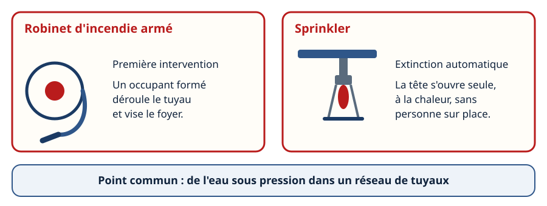
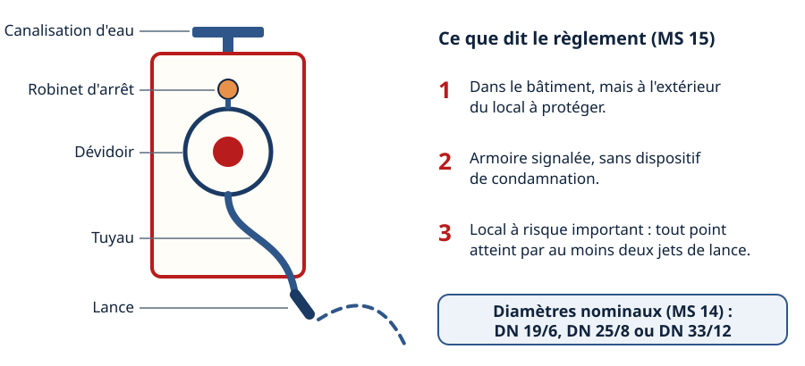
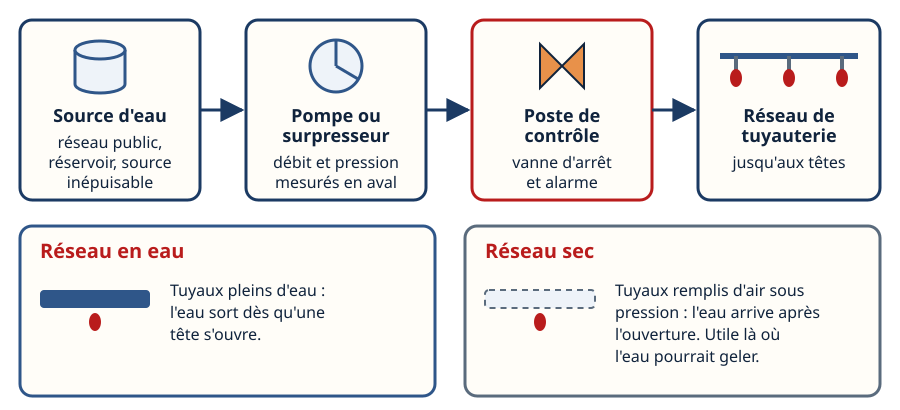
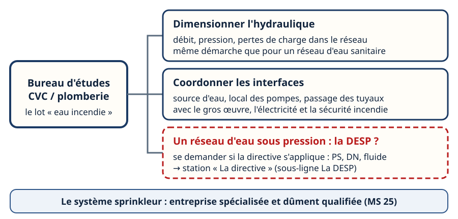
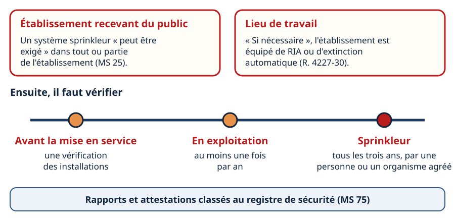

Mini-station commentée · 8 écrans et 4 questions · environ 10 minutes
Objectif
À la fin de la station, vous savez distinguer le robinet d'incendie armé (première intervention) du sprinkler (extinction automatique), expliquer comment une tête s'ouvre seule et pourquoi seule la tête au-dessus du foyer arrose, décrire la chaîne source d'eau – pompe – poste de contrôle – tuyauterie, et dire pourquoi c'est un réseau d'eau sous pression qui revient au bureau d'études CVC — avec la question de la DESP en pont.
Référentiel : TP TECVC, REAC TP-00133 — CP3 (réseaux sanitaires), par la méthode : dimensionner un réseau d'eau sous pression. Le sprinkler et le RIA eux-mêmes sont hors REAC : culture professionnelle du technicien d'études et du chargé d'affaires.
Chaque écran peut être expliqué à voix haute : le bouton « Écouter » commente ce que vous voyez. Rien n'est dit qui ne soit aussi écrit.
1 / 12
Écran 1 sur 8
Deux moyens à eau, deux logiques
Le robinet d'incendie armé (RIA) est un moyen de première intervention : une personne formée déroule le tuyau et vise le foyer. Le sprinkler est une extinction automatique : la tête s'ouvre seule, à la chaleur, sans personne sur place.
Un point les réunit : de l'eau sous pression dans un réseau de tuyaux. C'est ce point commun qui en fait un lot de bureau d'études.

À gauche, une personne agit. À droite, la chaleur agit seule.
Écran 2 sur 8
Le robinet d'incendie armé : le matériel et son emplacement
Le RIA se compose d'un robinet d'arrêt, d'un dévidoir, d'un tuyau et d'une lance. Le règlement de sécurité contre l'incendie dans les établissements recevant du public (ERP) en fixe l'emplacement (article MS 15) :
sauf impossibilité, à l'intérieur du bâtiment, le plus près possible et à l'extérieur des locaux à protéger ;
dans une armoire ou un coffret : signalés, sans dispositif de condamnation ;
dans un local à risque important d'incendie : tout point atteint par au moins deux jets de lance.
Le robinet est désigné par son diamètre nominal : DN 19/6, DN 25/8 ou DN 33/12 (article MS 14), et sa composition suit les normes qui le concernent.

Cinq pièces à nommer, trois règles d'emplacement à retenir.
Écran 3 sur 8
L'eau du RIA : l'alimentation et la pression
Alimentation (MS 16) : sauf impossibilité, par une canalisation d'eau en pression desservie par les conduites publiques ; l'alimentation par réservoirs élevés ou sous pression n'est admise qu'exceptionnellement.
Pression (MS 17) : la pression minimale de fonctionnement à laquelle le débit doit être fourni ne doit pas être inférieure à 2,5 bars au robinet d'incendie armé le plus défavorisé — celui où l'eau arrive avec le moins de pression.
Contrôle : un manomètre avec robinets à trois voies est mis en place près de ce robinet pour contrôler cette pression.
C'est ici que le bureau d'études intervient : tenir la pression au robinet du bout, c'est un calcul hydraulique.

Le robinet du bout est celui qui décide : c'est là que la pression se mesure.
Écran 4 sur 8
La tête de sprinkler : l'ampoule qui éclate
Une tête de sprinkler est fixée sous un tuyau d'eau sous pression. Au repos, une ampoule de verre bouche la sortie et retient l'eau.
À la chaleur, le liquide contenu dans l'ampoule se dilate jusqu'à briser le verre : l'eau sort et frappe le déflecteur, qui l'étale en gerbe vers le sol. La tête se déclenche seule, par la chaleur : ni détecteur, ni commande à distance.
L'article MS 25 précise que le système du type sprinkleur doit être conforme aux normes françaises homologuées.

À gauche, l'ampoule retient l'eau. À droite, elle a cédé à la chaleur.
Écran 5 sur 8
Seule la tête au-dessus du foyer s'ouvre
Chaque tête réagit à sa propre chaleur. Quand un foyer démarre, l'air chaud monte : la tête située juste au-dessus s'ouvre, et l'eau tombe sur le foyer.
Les têtes voisines, moins chauffées, restent fermées. Dans un feu plus étendu, plusieurs s'ouvrent, mais toujours celles que la chaleur atteint : le sprinkler n'arrose pas tout le local d'un coup.

Une tête ouverte sur cinq : celle qui est au-dessus du feu.
Écran 6 sur 8
La source d'eau et le poste de contrôle
La chaîne du sprinkler, de l'amont vers les têtes :
la source d'eau : réseau d'eau public, réservoir ou source inépuisable, avec des pompes ou surpresseurs qui répondent aux exigences de la norme NF EN 12845 (article MS 28) ;
la mesure : à chaque source, un dispositif installé à demeure permet de mesurer le débit et la pression (article MS 29) ;
le poste de contrôle : vanne d'arrêt et alarme du réseau ;
la tuyauterie jusqu'aux têtes.
Le réseau peut être en eau (tuyaux pleins, l'eau sort dès l'ouverture d'une tête) ou sec (tuyaux remplis d'air sous pression, l'eau arrive après l'ouverture — utile là où l'eau pourrait geler).

Une chaîne de quatre maillons : si l'un manque, la tête ouverte ne sert à rien.
Écran 7 sur 8
Pourquoi c'est un lot du bureau d'études CVC
Dimensionner l'hydraulique : débit, pression, pertes de charge dans le réseau — la même démarche que pour un réseau d'eau sanitaire.
Coordonner les interfaces : source d'eau, local des pompes, passage des tuyaux avec le gros œuvre, l'électricité et la sécurité incendie.
Poser la question de la DESP : c'est un réseau d'eau sous pression. Pour savoir si la directive s'applique, on lit son champ d'application et les grandeurs qu'elle utilise — la pression maximale admissible PS, le diamètre DN, le fluide. La station La directive donne la marche.
Le système sprinkleur lui-même doit être réalisé par des entreprises spécialisées et dûment qualifiées (article MS 25) : le bureau d'études prépare le réseau, il ne se substitue pas à elles.

Trois missions pour le bureau d'études — dont un pont vers la DESP.
Écran 8 sur 8
Quand c'est exigé, et comment c'est entretenu — bilan
ERP : un système sprinkleur peut être exigé dans tout ou partie de l'établissement (MS 25).
Lieu de travail : si nécessaire, l'établissement est équipé de RIA, de colonnes, d'extinction automatique ou de détection (Code du travail, R. 4227-30).
Vérifications (MS 73) : avant la mise en service, puis en exploitation au moins une fois par an ; un sprinkleur est vérifié tous les trois ans par une personne ou un organisme agréé.
Suivi : appareils entretenus et maintenus en bon état, personnel formé (MS 72) ; rapports et attestations classés au registre de sécurité (MS 75).
Le réflexe : lire le texte pour savoir si c'est exigé, jamais le supposer.

Exigé seulement si le texte le dit, puis vérifié et tracé.
Question 1 sur 4
Que fixe le règlement ERP au robinet le plus défavorisé ?
Rappel de l'écran 3 — le manomètre est près du robinet du bout.
Question 2 sur 4
Un foyer démarre sous une seule tête. Que se passe-t-il ?
Rappel de l'écran 5 — cinq têtes, une seule ouverte.
Question 3 sur 4
Pourquoi ce sujet concerne-t-il le bureau d'études CVC ?
Rappel de l'écran 7 — trois missions, dont un pont vers la DESP.
Question 4 sur 4
En plus du suivi annuel, quelle vérification pour un sprinkleur ?
Rappel de l'écran 8 — les jalons de vérification.
Les correspondances de la station
La directive (DESP) (autre sous-ligne : La DESP)
— le pont de cette station : un réseau d'eau sous pression, où lire PS, DN et le fluide pour savoir si la directive s'applique.
En service (DESP) (autre sous-ligne : La DESP)
— le suivi d'un équipement sous pression dans le temps, comme les vérifications du sprinkleur.
Classer le bâti (même sous-ligne)
— la première étape : le classement du bâtiment oriente ce qu'il faut lire, et ce qui peut être exigé.
Le SSI (même sous-ligne)
— l'autre volet de la sécurité incendie : détecter et alerter, quand le sprinkler éteint.
HydroMétro (réseau voisin, l'eau)
— les circuits d'eau côté technique : le même vocabulaire de débit et de pression.